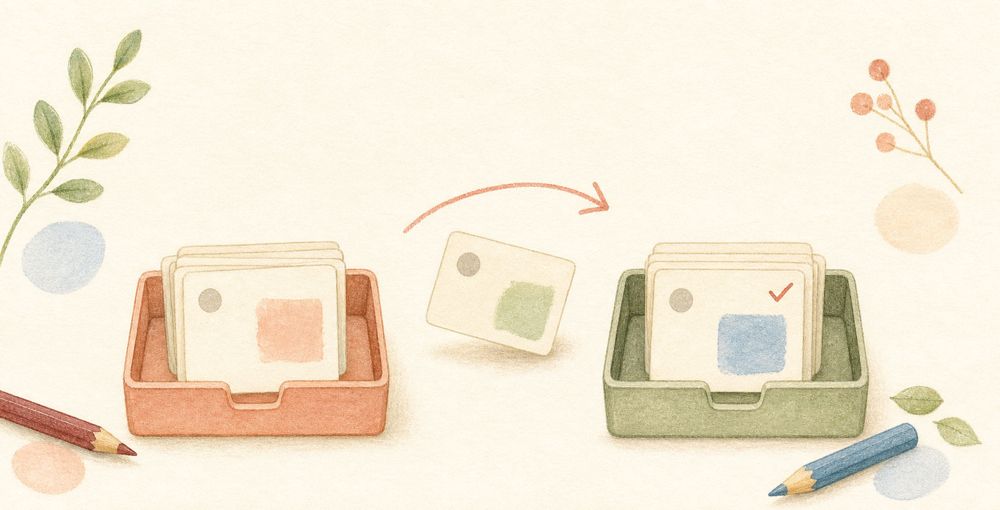
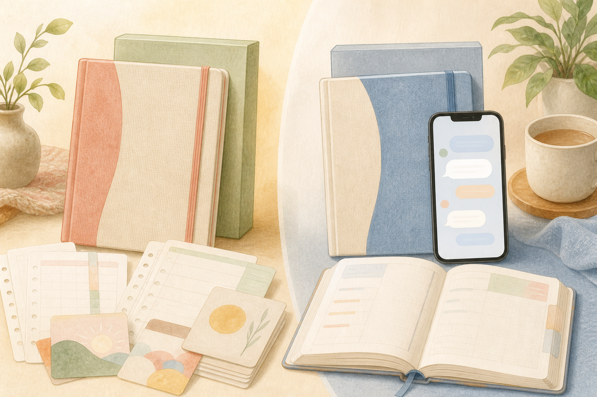

「今日どこやればいい？」で止まってしまう
受験生の家庭学習を、今日の1コへ。
「勉強しなさい」を
「今日はこれ1コだけ」に。
やる気を待つ前に、入口を小さくする。きょういちプロジェクトは、親子が今日やることを迷わず始めるための教材セットです。
480円から
AI伴走対応
夏休み課題追加
TODAY
今日の1コ
ワークを開いて、1問だけ
01 / 共感
親が悪いわけでも、子どもが悪いわけでもない。
noteでは「勉強しなさい」の一言で空気が止まる毎日から、入口を小さくする発想へたどり着いた流れが語られています。
ワークを開くまでが、もう重い
親が毎日、勉強内容を考える係になる
計画表を作っても、崩れたら戻れない
02 / しくみ
大きすぎる勉強を、脳が動けるサイズまで小さくする。
「やる気が出たら始める」ではなく、まず手を動かす。60秒、1問、カード1枚。小さな始まりが次の勉強につながります。
何をやるかを1コにする
教科、ページ、解き直し。選ぶ負担を減らして、最初の一歩だけ見えるようにします。
60秒だけ始める
完璧な計画より、始められた感覚。小さく着手して、作業興奮につなげます。
崩れても再開しやすく
できなかった日を責めるより、明日の1コへ。親子の空気を戻す仕組みです。

03 / 内容
紙で見える化。必要ならAIが伴走。
noteで紹介されている内容を、購入前に見比べやすい形で整理しました。
スタディプランナー
今日の1コ、できたか、ひとことメモ。書くことを最低限にしたPDF教材。
勉強レシピ帳
5分だけの日、30分いけそうな日、しんどい日に合わせて入口を選べます。
問題カード
ペラッと1枚取って、1問だけ。ワークを開く前の負担を軽くします。
夏休み課題ワーク用プランナー
ページ数と使える日数から、最低限どれだけ進めるかを見える化。
きょういちベース
志望校、テスト日程、ワーク情報、学習状況をまとめるスマホWebツール。
きょういちプランナー
GPTsのAI伴走コーチが、今日の気分や進捗から1コを一緒に決めます。
04 / かんたん診断
うちは、どちらから始める？
当てはまるものを選ぶと、今の家庭に合いそうなセットを表示します。結果はこのページだけに保存されます。
おすすめ
まずはチェックしてみてください
選んだ内容に合わせて、通常セットかproを表示します。
05 / セット比較
迷ったら、親の負担をどこまで減らしたいかで選ぶ。
紙から始めるなら通常セット。毎日の「何やる？」まで軽くしたいならproがおすすめです。

紙で始める
きょういちセット
今だけ480円
通常 980円
- スタディプランナー PDF + Canvaテンプレート
- 勉強レシピ帳 PDF
- 問題カード PDF
- 2026年夏休み課題ワーク用プランナー PDF
いちばんおすすめ
きょういちセットpro
今だけ2,480円
通常 2,980円
- 通常セットのPDF教材一式
- きょういちプランナー AI伴走コーチ
- きょういちベース 学習情報管理Webツール
- webツール倉庫
- 中1〜3理科 化学単元横断教材など追加
価格・内容はnote掲載情報をもとに、2026年7月9日時点で整理しています。販売ページ側の最新表示もご確認ください。
06 / 変化
買ったあとに変わるのは、教材だけではなく、声かけです。
noteでは、Threads投稿が5万ビューを超え、同じ悩みの声が届いたことも紹介されています。
今まで
「勉強しなさい」→ 子どもフリーズ → 親イライラ → 空気が凍る
きょういち後
「今日の1コは？」→ 選ぶ → 60秒だけ始める → できた感覚が残る
07 / よくある質問
購入前の迷いを、ここで小さく。
紙だけでも使えますか？
はい。スタディプランナー、勉強レシピ帳、問題カードだけでも始められます。まず紙で見える化したい方は通常セットが向いています。
proはどんな人向けですか？
親が毎日考える負担を減らしたい、子どもに合わせた提案がほしい、ChatGPTを家庭学習に使いたい方に向いています。
計画が崩れたら終わりですか？
いいえ。きょういちは完璧な計画表ではなく、崩れても今日の1コへ戻るための仕組みです。
どちらにするか迷ったら？
低価格で試したいなら通常セット。毎日の「何をやる？」まで任せたいならproを選ぶと、親の管理負担が軽くなりやすいです。